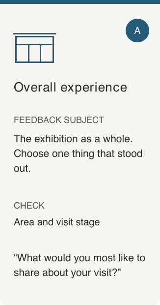
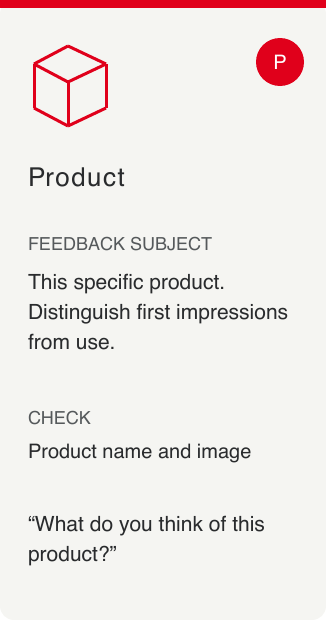
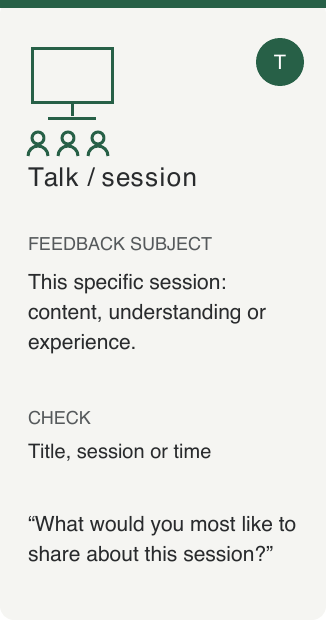
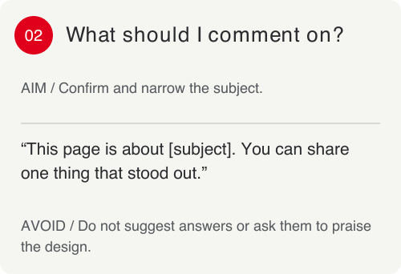
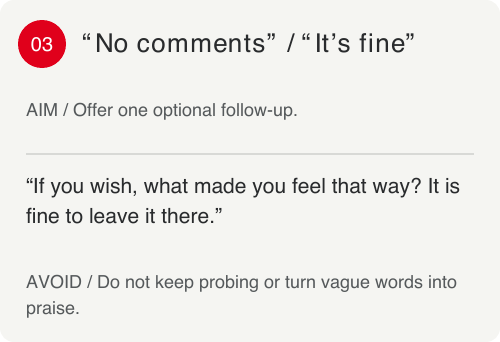
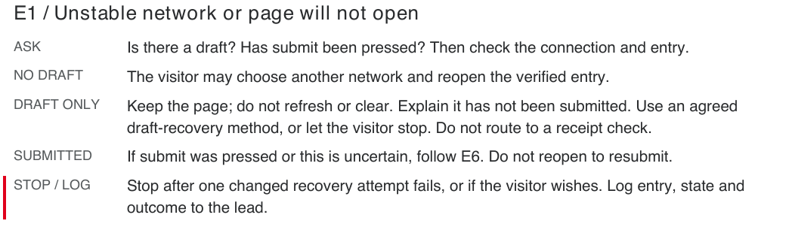

Physical materials and staff invite visitors to participate.

Context & contribution
Help visitors turn exhibition
experiences into feedback.
During my internship at DI Works, I contributed to YouFeed’s feedback experience for Giacomini’s exhibition, including mobile interaction and interface design, NFC entry materials, and a handbook for on-site staff. The project covered three feedback contexts: the overall exhibition, specific products, and talks or sessions. Its deployment collected more than 1,000 responses.
My work followed the visitor’s feedback journey: explaining how to enter through physical materials, identifying the subject and supporting expression and review on the phone, and helping prepare staff guidance and exception-handling instructions. Mobile flows, physical entry points and staff support formed my design scope. The enterprise platform and InsightGPT analysis were handled by the team.
- Project context
- Giacomini · ISH Frankfurt 2025: an exhibition project for one client.
- My contribution
- YouFeed interaction and interface design, NFC materials and staff guidance.
- Team outcome
- Deployed and validated in practice; 1,000+ feedback responses collected across the project.
- Product potential
- This case focuses on an exhibition. YouFeed can also support product feedback at other touchpoints, such as stores.
The service
From a visitor’s words
to a company’s feedback system.
The physical entry point and mobile page form the part of the service visitors directly experience. Feedback flows into the company platform, where InsightGPT processes and analyses it for clients to review and use in decisions. These downstream stages describe the company service context.
The mobile page identifies the subject and offers voice and text.
The team owns feedback collection into the platform and AI analysis.
Clients use the team platform; specific report formats are outside this case.
Physical → digital
The entry experience
starts before the screen.
The NFC card is the first step of the feedback journey. The existing materials use a phone, a wireless signal, and “Tap and voice your feedback” to explain how to begin. The mobile page carries that invitation forward with the client identity, product image, and name.

Design implementation
Enter, express, review,
and complete.
The product-feedback path shown here establishes context with a product image and a short question, supports both voice and text, and lets users review and edit before finishing. The interface demo uses sample text: it captures no real audio and sends no feedback to the company platform.


Staff support / Field guide
Make staff support
part of the experience.
For the first field test, I also helped design a staff handbook: how YouFeed served the exhibition, what each area asked visitors about, and how staff could guide participation and handle exceptions. These three excerpts show the service design work beyond the interface.
Reconstructed from project experience, 2026. The three feedback contexts come from recollection; the specific prompts and operating rules were newly prepared and have not been field-tested.
01 / Match the question to the area
Exhibition, product and session feedback have different subjects. Staff check that the area, physical entry point and mobile page refer to the same subject.



02 / Help visitors express their own view
When visitors do not know where to start, invite a specific experience. When feedback is vague, offer room to elaborate or leave no comment. The visitor keeps ownership of the answer.


03 / When offline, first check the feedback state

- No draft yet
- Check the connection and entry point, then use a verified alternative.
- Draft written, not submitted
- Keep the page open. Do not refresh or clear it; use the agreed draft recovery or let the visitor choose to leave.
- Submitted or uncertain
- Stop repeat submissions and ask the lead to check receipt status.
Three design decisions
How can each area make the feedback subject clear?
The overall exhibition, specific products, and talks or sessions have different subjects. Area cues, physical entry points and mobile context need to match. The product-feedback path uses an image and model name to confirm the subject as one concrete example.
How can staff help visitors who do not know what to say?
The staff guidance I contributed to covered area-specific questions and ways to help visitors respond. The interface offers voice and text; the reconstructed cards show how to invite a specific experience and allow no comment while leaving the judgement to the visitor.
Who takes over when feedback cannot be completed?
The original handbook included instructions for network and connection problems. The reconstructed version distinguishes no draft, an unsubmitted draft and uncertain submission, specifying when to keep the page open, stop retrying and ask the lead to check the status.
A real exhibition.
1,000+ feedback responses.
The project was deployed at a real exhibition and collected more than 1,000 responses as a shared team outcome. My contribution spanned mobile interfaces, physical entry points and staff guidance, showing how I approach digital interaction as part of an on-site service journey.
The Giacomini project at ISH Frankfurt grounds this case in a specific exhibition and physical touchpoint.
I connected mobile flows, physical entry points and staff guidance around the visitor’s feedback journey.
The cumulative response count comes from actual project deployments and reflects the work of the team.
The available evidence establishes actual project usage, but cannot attribute changes in completion or feedback quality to an individual design decision.
Reflection
Bring interfaces, touchpoints
and people into one journey.
What I learned
Looking back on this work, I see more clearly that a complete feedback experience depends on how well the interface, entry points and staff support connect.
What to test on site next
In the next field test, I would observe whether visitors understand the feedback subject, whether staff can quickly find the right guidance, and whether exception handling preserves content and avoids duplicate submissions.